REC00:00:00:01
The screening room.
The Nobleman Productions client portal: what it does, how to run it, and how to take it live.
Owners and staff at Nobleman Productions, and GotIT2Work, who runs the portal. Chapter 2 is written so it can also be handed to a client.
Names of buttons and places in the portal are in this style, and paths read left to right: Studio → Settings → Login screen. Numbered steps are done in that order.
The one frame nobody checked is the one everyone sees.
So every version comes here first, for the client to check before it’s final.
One private place where clients watch every version, leave notes on the exact moment, approve, pay, and download, and where the studio runs every project.
Clients, staff, and owners log in at the same page. What each person sees next depends on who they are: clients see their own company’s projects; staff also see Studio, where the studio runs everything. Nobody chooses a “client login” or “staff login”.
A busy executive opens an email, presses one button, and approves a film. Home leads with one next step, and clients see only the newest version.
Wording, photos, stages, roles, connections, and switches are all settings in Studio. Code changes only add or remove what the portal can do.
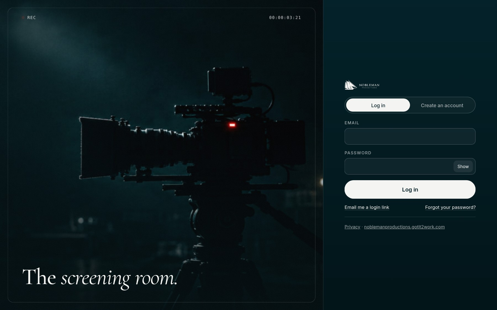
| Address | What’s there |
|---|---|
portal.noblemanproductions.gotit2work.com | The portal. Today it shows the sample; after going live (chapter 7), the login. |
…/demo | The sample project, always. Anyone can click through it; nothing is saved or sent. A switch shows the client’s view or the studio’s. |
…/signup | Creating an account, when it’s switched on (Settings → Logins and accounts). |
noblemanproductions.gotit2work.com | The website. Its Log in button leads here; the privacy page covers the portal. |
Six places, each one tap away: Home, Review, Films, Files, Messages, and Payments. What appears depends on what the studio switched on for the project, and on the person’s role.
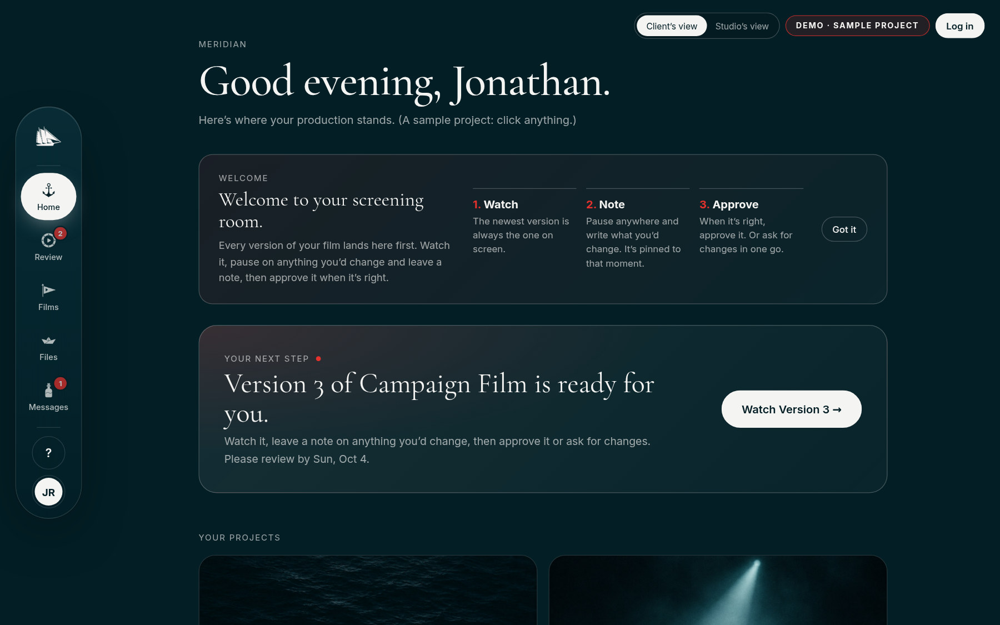
Home leads with the single thing that needs this person now, in this order: a version to review, a payment to make, a milestone to confirm (such as a filming day), a new message, a new film. When nothing needs them, it says so.
Each project shows its stage (Planning to Delivered, set in Settings), progress, the next milestone, and tiles for Review, Films, Files, Messages, and Payments with what’s waiting in each.
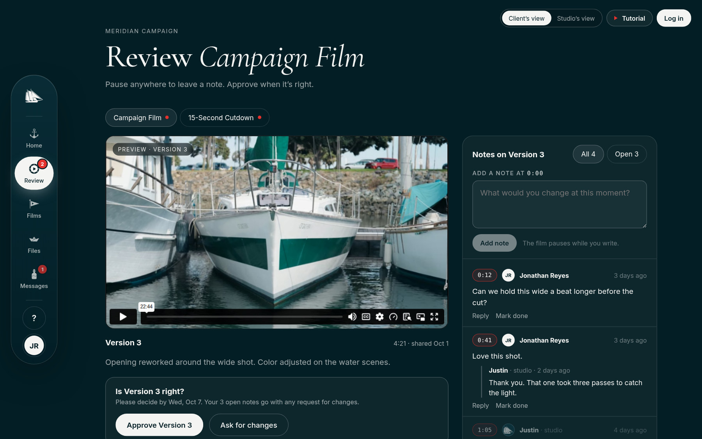
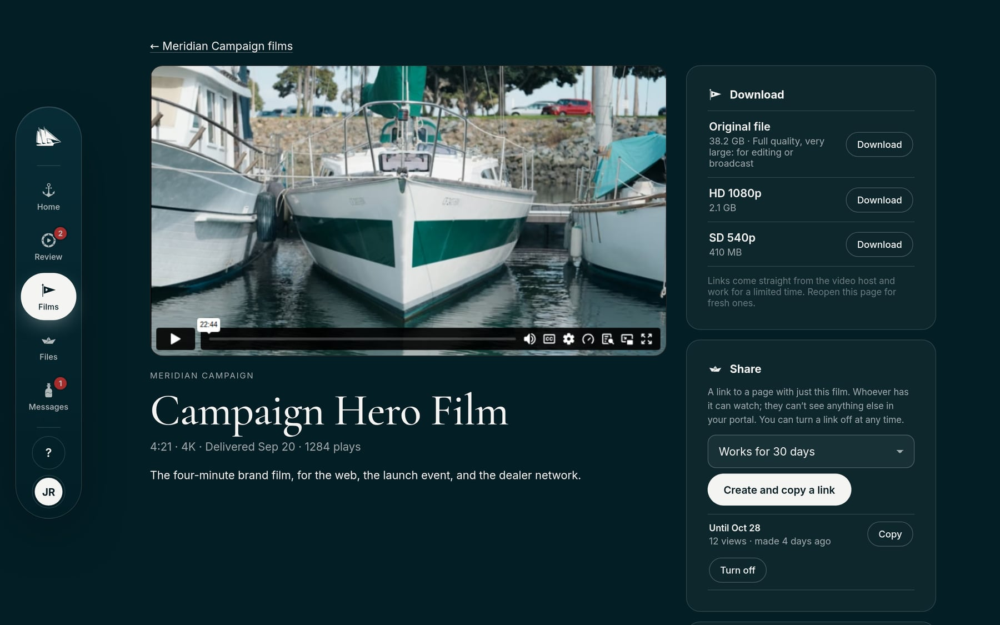
Finished films to watch and, where it’s switched on, download (and the original full-quality file, if allowed), with caption files and chapters. Share links send one film to someone outside the portal for 7, 30, or 90 days or until turned off, and count views.
Documents from the studio (quotes, schedules, call sheets), and anything the client sends: logos, references, footage. Files up to 500 MB go to private storage; videos go straight to the project’s Vimeo folder, up to 50 GB each.
One conversation per project. A line above it says who they’re writing to and when to expect a reply (set in Settings, and only promising what’s always true). Unread messages show as a badge.
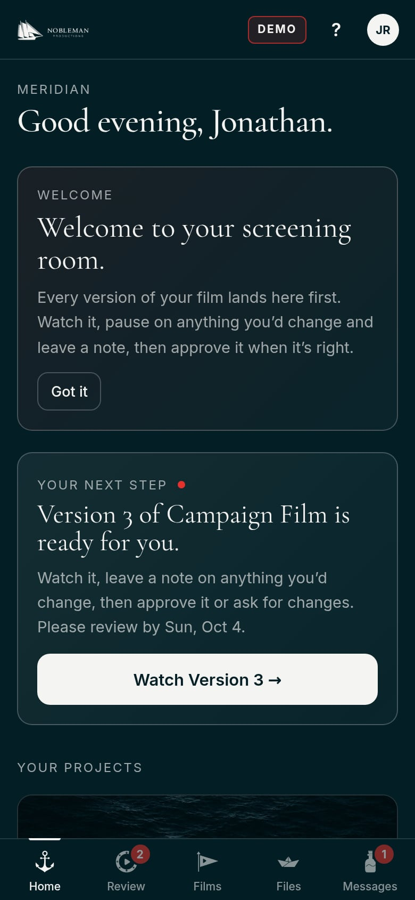
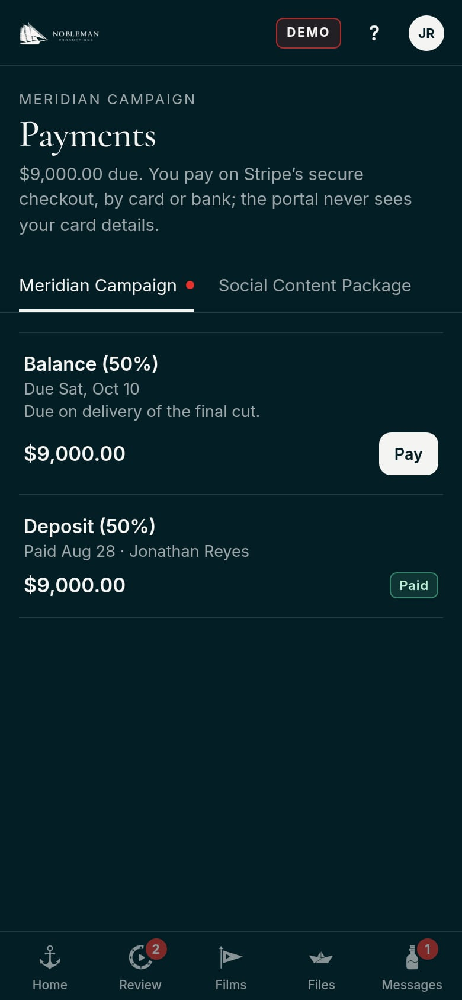
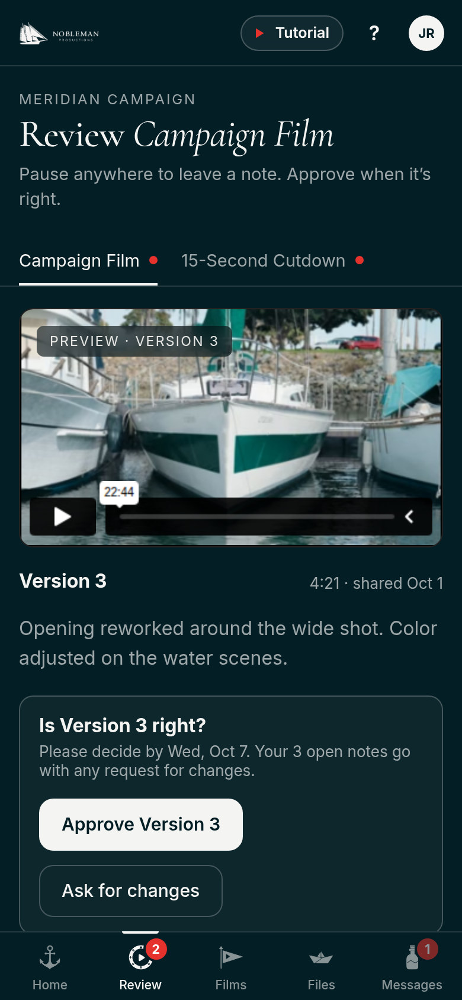
When the studio asks for a payment, Home says Please pay and the project shows what’s due. Pay opens Stripe’s secure checkout (card, plus whatever else is turned on in Stripe, such as Apple Pay or bank), so card details never reach the portal. Paid ones stay listed with who paid and when. Only decision makers pay; others see what’s due.
Decision makers invite colleagues (who get an emailed link), change their roles, and remove them. The studio is told each time.
Name and job title, email updates on or off, the password (changing it logs them out everywhere else), and two-step verification with an authenticator app (with recovery codes, saved once). A changed email address goes through the studio.
With a password, or an emailed login link (works once, within 15 minutes). Forgot your password? emails a link to choose a new one (works once, within an hour). New people can Create an account when the studio allows it.
Two things decide what someone can do on a project: the project’s switches, and their role. The server checks both on every action; hiding a button is never the only protection.
| Role | Kind | By default |
|---|---|---|
| Owner | Staff | Everything, always, including settings, connections, roles, and staff. Keep at least two. |
| Producer | Staff | Clients, people, projects, and payments day to day; not connections, settings, staff, or deleting clients. |
| Editor | Staff | Adds versions and files, answers notes and messages, updates progress. |
| Decision maker | Client | Reviews, approves, downloads, shares, uploads, messages, pays, and manages their team. |
| Reviewer | Client | Watches and leaves notes. Can’t approve or pay; sees what’s due. |
| Viewer | Client | Watches and downloads. No notes or messages. |
Owners change what Producers, Editors, and the client roles may do in Studio → People → What roles can do. Two permissions (manage staff; change settings and roles) are owner-only and can’t be granted, so nobody can give themselves more than an owner gave them.
| Staff permission | Owner | Producer | Editor |
|---|---|---|---|
| Create and edit projects | ● | ● | – |
| Update progress | ● | ● | ● |
| Manage videos and files | ● | ● | ● |
| Ask for and record payments | ● | ● | – |
| Clients and their people | ● | ● | – |
| Export data, activity log | ● | ● | – |
| Connections | ● | – | – |
| Staff, settings, roles | ● | – | – |
| Client permission | Decision maker | Reviewer | Viewer |
|---|---|---|---|
| Leave notes | ● | ● | – |
| Approve or ask for changes | ● | – | – |
| Download | ● | ● | ● |
| Share links | ● | – | – |
| Send files | ● | ● | – |
| Messages | ● | ● | – |
| Pay | ● | – | – |
| Manage their team | ● | – | – |
Every project has its own switches, in Studio → Projects → a project → What they can do. New projects start from Settings → New projects start with. Off means hidden from the client and refused by the portal. Staff can always do everything.
| Switch | Starts | What the client gets |
|---|---|---|
| Review versions | On | Watch each version and leave notes on a moment. |
| Approve versions | On | Approve, or ask for changes. Needs Review. |
| Earlier versions | Off | Open earlier versions too, one at a time. |
| Download finished films | On | The sizes the video host has ready. |
| Download original files | Off | Also the full-quality original. Very large. |
| Captions and chapters | On | Caption files and chapter jumps. |
| Share links | Off | A page for one finished film, for colleagues. |
| Play counts | Off | Plays at the host and through share links. |
| Files from the studio | On | Quotes, schedules, call sheets. |
| Uploads | Off | Send files, and video to the Vimeo folder. |
| Messages | On | A conversation with the studio. |
| Payments | On | See and pay what the studio asks for. |
| Downloads after payment | Off | Downloads open once everything is paid. |
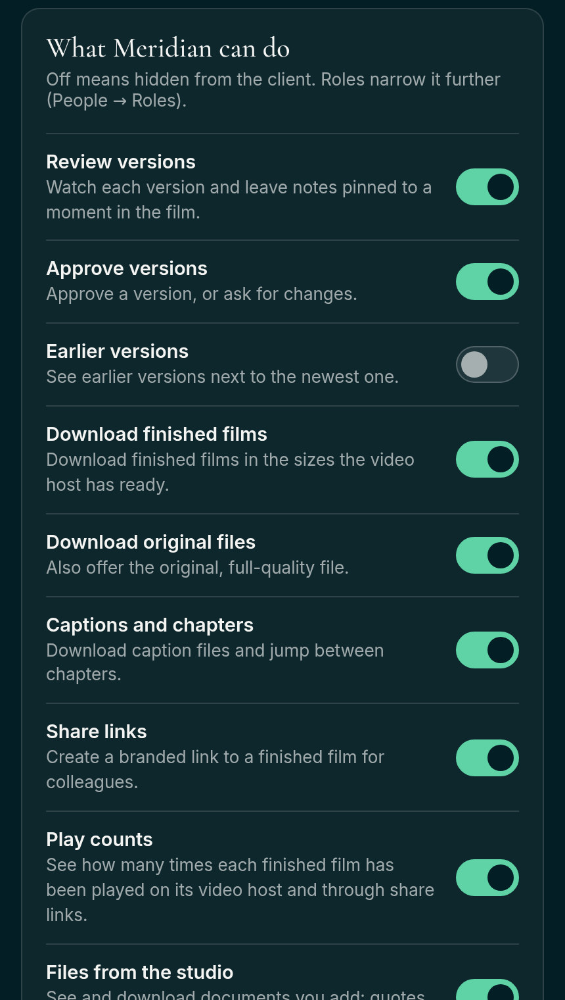
The file you didn’t lock is the one that leaves early.
So Downloads after payment holds final files until the balance is in, while the client can still watch everything.
Studio is where staff run everything: projects, clients, people, connections, settings, and the activity log. Each tab and button appears only when the person’s role allows it.
Leads with what needs the studio: people asking to join, changes a client asked for, unread messages, open notes. Below it, two lists: Needs the studio and Waiting on clients (versions to review and payments due), then active projects and recent activity.
On a new, empty portal, owners see a checklist instead: file storage, email, a video source, the first client, the first project, the first invitation, plus Stripe, Notion, and a second owner as options. Each line links to where it’s done, and the list goes away by itself.
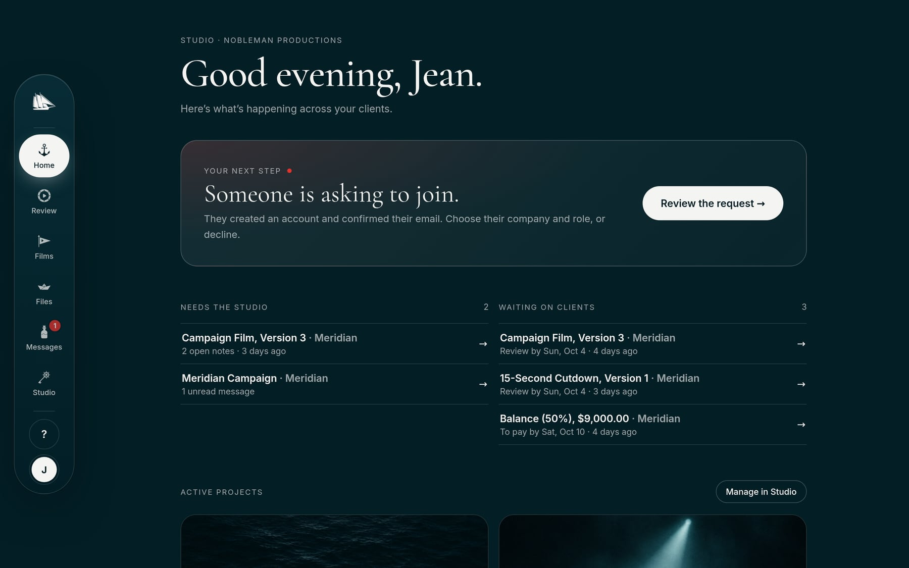
| Tab | Who, by default | What you do there |
|---|---|---|
| Projects | All staff | Create projects; each opens in parts (Details, Progress, Videos, Payments, What they can do) under one Save. Export all projects to a spreadsheet. |
| Clients | Owners, producers | Companies: name, logo, private notes, email domains for joining. Export everything about a client (JSON). Delete. |
| People | Owners, producers | Let in or decline people asking to join; invite; change role, company, or email; resend an invitation or a reset link; log someone out everywhere; turn off two-step for a lost phone; remove. What roles can do. |
| Connections | Owners | Video sources, Notion, payments (Stripe), and email. Keys are stored encrypted and never shown again. |
| Settings | Owners | Nine short sections, one open at a time, beginning with the System check. |
| Activity | Owners, producers | Who did what and when, filtered by person, client, project, or word; export. Kept about 13 months. |
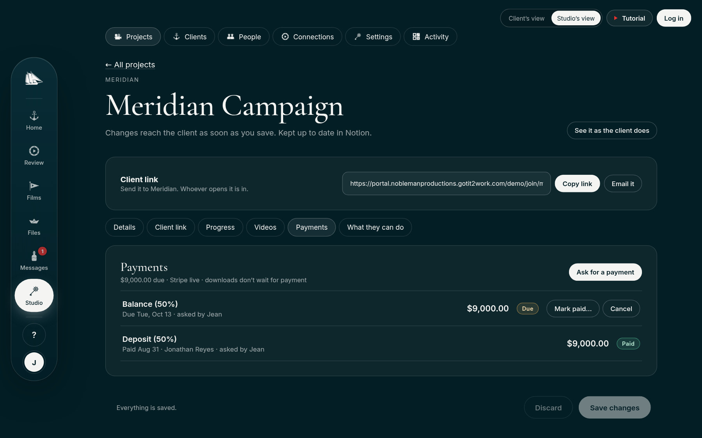
Name, kind of project, summary, client, and an optional cover image link (empty uses the newest film’s thumbnail). Archive hides it from the client and can be undone; Delete project… removes its notes, decisions, messages, share links, payment records, and files for good, after typing its name. Videos stay where they are.
The stage, the progress shown, the next milestone (label, date, what happens) with an option to ask the client to confirm it, the review-by date, and Email a review reminder now.
Where videos come from, and every video there. A title with a version number (“Harbor Spot V2”) goes to Review; the rest go to Films. Each film’s earlier versions fold under its newest. Each video’s More menu hides it, renames it for the client, or makes it a finished film; nothing changes at the source.
Ask for a payment, cancel one, or Mark paid… for a check or wire (chapter 6). The last part holds the project’s switches (chapter 3).
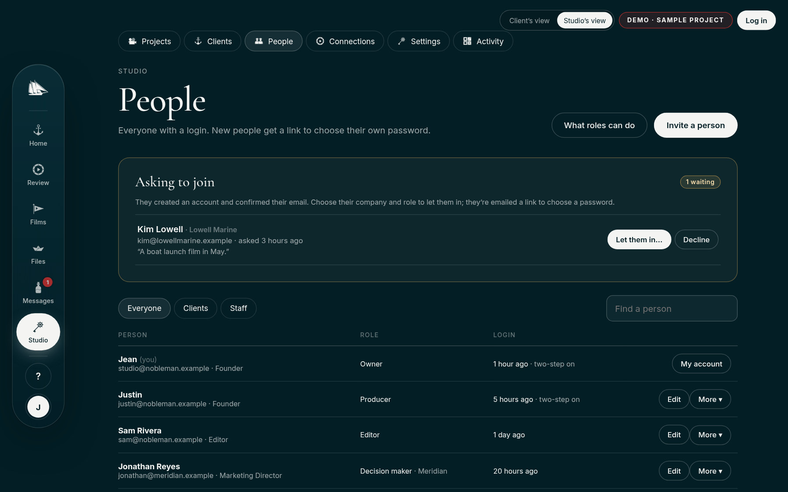
Nobody sets or sees another person’s password. An invitation or reset is a one-time link (invitations last 14 days), emailed and also shown to copy. A newer link replaces older ones.
When sign-up is on, anyone can create an account; it waits until the studio lets them in, choosing their company and role. People whose email domain is listed on a client join that client as soon as they confirm their email.
| System check | Everything the portal needs, with what to do about anything that isn’t right. |
| Studio details | Name, help email, addresses, the line above Messages. |
| Login screen | The photo (one of the studio’s or an upload), which side stays in view, and the Murphy’s Law. |
| Welcome message | Shown once, on a client’s first visit. |
| Notice for everyone | One line at the top of every page. |
| Project stages | Names, order, and the progress each shows. |
| New projects start with | The default switches. |
| Logins and accounts | Two-step for staff, login links, client teams, who can create an account, joining by domain, how long logins last. |
| Review reminders | On or off, and how many days before the date. |
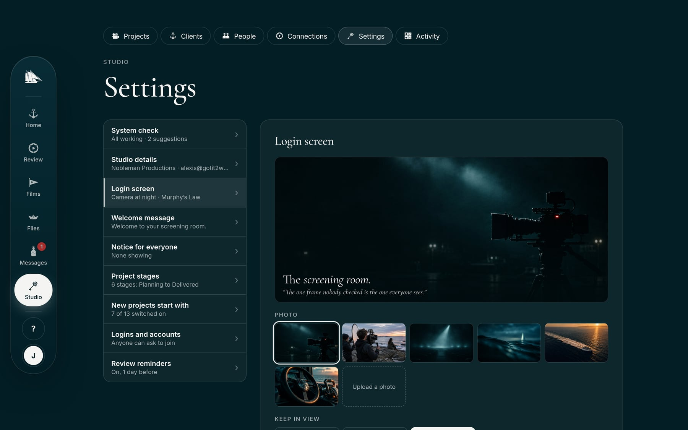
The accounts the portal works with, each added in Studio → Connections, tested with one button, and stored encrypted. Nothing here needs a developer.
A project’s videos come from one place: a folder (or playlist, or project) in a connected account, or video links pasted one by one. In every source, a title with a version number becomes a version: “Harbor Spot V2”, “Harbor Spot - Version 4”, “Harbor Spot (V5)”.
| Source | Plays in | Versions | Downloads | Captions | Uploads |
|---|---|---|---|---|---|
| Vimeo | Vimeo’s player | By name | Standard plan and up (else “Download on Vimeo”) | ● | ● |
| Frame.io | The portal’s player | Version stacks | Original and smaller copies | – | – |
| YouTube | Privacy-enhanced player | By name | None | – | – |
| Wistia | The portal’s player | By name | Yes | ● | – |
| Video links | The link’s own player | By name | None | – | – |
Jean, in Vimeo: developer.vimeo.com → Create an app → Generate an access token → Authenticated (you), scopes Public, Private, Edit, Upload, Video Files, Stats. Paste it in Studio; Test it ticks each scope. Each project uses one folder. Videos must allow embedding (Unlisted or Hide from Vimeo; embed Anywhere or the portal’s address).
Frame.io signs in through Adobe (Studio shows the redirect address to copy); version stacks are versions. YouTube: a Data API key; one playlist per project. Wistia: an API token; one project each. Video links need no account: paste YouTube, Vimeo, Google Drive, Loom, Wistia, Dropbox, or .mp4 links.
One row per project, kept up to date within seconds: name, client, stage, progress, review status, latest version, open notes, next step, review-by date, last activity, and a link back. Create an internal connection (Read, Update, Insert content), paste its token, add the connection to the Notion page, then let Studio create the database or use yours. No names, emails, notes, or messages go to Notion.
Invitations, account confirmations, login and reset links, updates, approval receipts, review reminders, and payment emails. A Resend API key with sending access on the verified gotit2work.com domain, sending as portal@gotit2work.com. Send a test email checks it end to end. Without email, links are shown in Studio to copy.
Documents and client files in a private Vercel Blob store: nothing has a public address. Uploads go straight from the browser to storage; downloads use links that expire after ten minutes. Set up in Vercel, not in Studio (chapter 7).
The secret key (test or live), the currency, and the webhook signing secret. Until the webhook is connected, the card shows its address (with a Copy button) and the four events to choose in Stripe; after that, under Show the setup. Test mode first, then live (chapter 7, step 12).
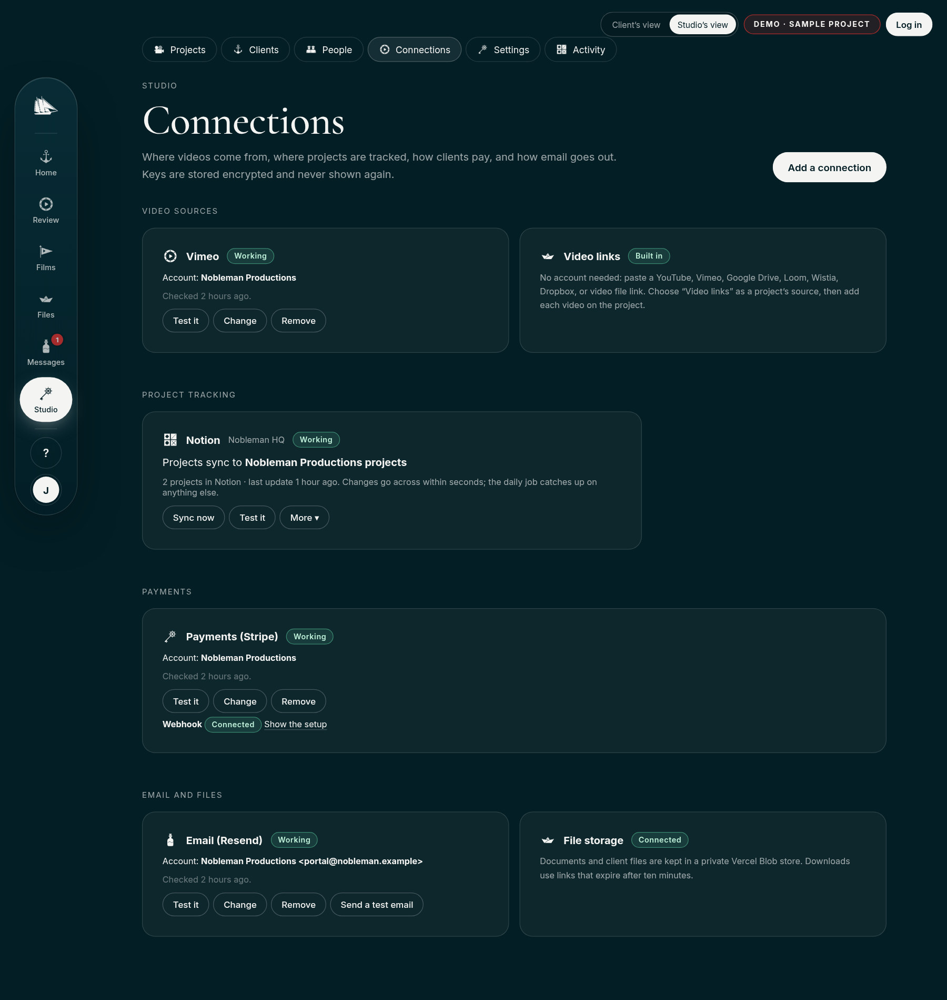
The studio asks; the client pays on Stripe’s own checkout; the portal marks it paid only when Stripe says so. Card and bank details never touch the portal.
| Due | Asked for, not paid yet. Shows a due date if one was set. |
| On its way | A bank payment (ACH) was made and is clearing, usually a few business days. If it fails, it goes back to Due and both sides are told. |
| Paid | Stripe confirmed it, or the studio recorded a check or wire with Mark paid…. |
| Refunded | Refunded in full in Stripe. |
Canceling an unpaid request removes it for the client and stops its checkout, so it can’t be paid any more.
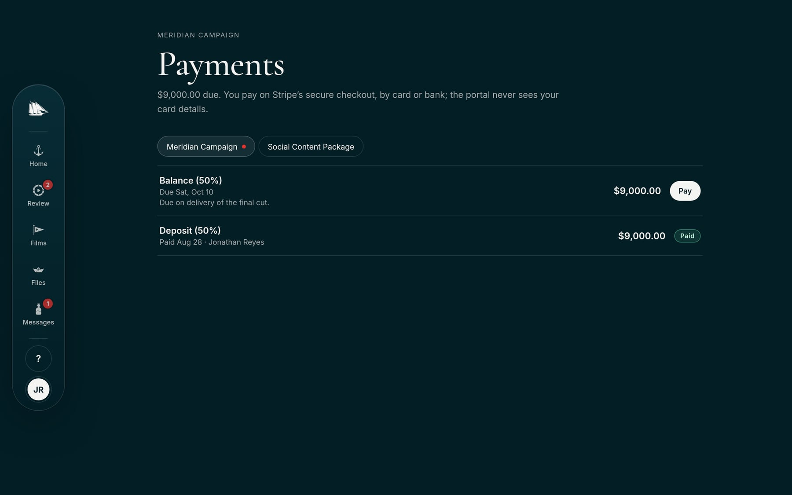
A project switch (off unless you turn it on). While anything asked for on the project is unpaid, finished films can be watched but not downloaded; the download card says so and links to what’s due. Staff are never held. Once it’s paid, by Stripe or Mark paid…, downloads open at once.
Decision makers pay. Reviewers and viewers see what’s due. Owners and producers ask, cancel, and mark paid. Owners connect Stripe. Each request, cancellation, payment, and refund is in the activity log, and every client data export includes the payment records.
From the public sample to the real, empty portal, then every connection. Settings in Vercel, Stripe, and Studio only: no code, and no help needed. About 90 minutes for steps 1 to 11; Stripe takes longer the first time, while it reviews the new account.
Add a variable: Vercel → nobleman-portal → Settings → Environment Variables → Add New. Tick Production and Preview, turn on Sensitive, Save.
Redeploy: Deployments → the newest Production one → ⋯ → Redeploy. Wait for Ready.
Check: open …/api/session. It answers in plain text; each step says what to look for.
| Part | Steps | Where | What you end with |
|---|---|---|---|
| A. The empty portal | 1 to 8 | Vercel | The login at the portal’s address, your owner account, and two-step verification. |
| B. Connections | 9 to 12 | Resend, Vimeo, Notion, Stripe, then Studio → Connections | Email, videos, project tracking, and payments, each tested. |
| C. People and projects | 13 and 14 | Studio | Real clients, projects, and invitations; the login screen and settings. |
The full runbook, with every field and what to expect after each step, is docs/GO-LIVE.md in the portal’s repository. These pages are the same steps, shortened.
openssl rand -base64 48. Windows (PowerShell 7): [Convert]::ToBase64String([System.Security.Cryptography.RandomNumberGenerator]::GetBytes(48))nobleman-portal-db; connect to Production and Preview. Expected: DATABASE_URL appears. No SQL to run; the portal makes its own tables.nobleman-portal-files, connect to Production and Preview. Expected: BLOB_READ_WRITE_TOKEN appears.| Key | What it’s for | After setup |
|---|---|---|
SESSION_SECRET | Signs logins. Changing it logs everyone out. | Keep |
PORTAL_ENCRYPTION_KEY | Encrypts the keys pasted into Studio. Never change it once connections exist. | Keep |
CRON_SECRET | Lets Vercel run the daily job. | Keep |
BOOTSTRAP_SECRET | The one-time setup code for the first owner. | Delete |
PORTAL_MODE. The sample stays at /demo./api/session shows "demoAtRoot":false, "db":true, "setup":true, "setupReady":true; the address shows Set up the portal.BOOTSTRAP_SECRET value as the setup code, your name, email, and a password of 10+ characters → Create the owner account. Home shows Getting started. Setup only works while no staff account exists.BOOTSTRAP_SECRET → redeploy. System check → Setup code: “Removed after setup”.gotit2work.com should already be Verified for the website’s form (if not, do the website runbook’s Phase 5 first; its records never change the root SPF, the Microsoft 365 MX, or the apex). API Keys → Create: name “Nobleman portal”, Sending access. Studio → Connections → Connect email: the key; send from Nobleman Productions <portal@gotit2work.com>; replies to the address Jean and Justin read. Expected: Send a test email arrives.a. The account (Jean or Justin): sign up, activate payments (business details, payout bank, statement name). Settings → Branding: logo, #031e25, #e5322d. Customer emails: Successful payments on. Payment methods: cards on; ACH Direct Debit if clients pay large balances by bank.
b. Test mode: Developers → API keys → Secret key (sk_test_…) → Studio → Connections → Payments → Connect Stripe, currency usd. Expected: “Test mode” and the account name.
c. Webhook: copy the address from the Stripe card (…/api/connect?webhook=stripe) → Stripe → Developers → Webhooks → Add endpoint → events checkout.session.completed, checkout.session.async_payment_succeeded, checkout.session.async_payment_failed, charge.refunded → reveal the signing secret (whsec_…) → Studio → Change → paste. Expected: Webhook: Connected.
d. Full test: ask a test client for $1 → pay with card 4242 4242 4242 4242, any future date, any CVC. Expected: “Thank you. $1.00 is paid.”, Paid in Studio, the payment in Stripe, an email to the studio.
e. Live: turn off test mode; repeat b and c with the live key and the live endpoint’s own secret; pay a real $1 and refund it. Expected: Refunded.
Done when the address shows the login, the System check is all working, a test client could review, approve, message, upload, and pay, and the test client and project are deleted.
PORTAL_MODE = demo and redeploy. Nothing in the database is touched; delete it again to return.| What you see | What to do |
|---|---|
| The address still shows the sample | PORTAL_MODE is still set, or there was no redeploy. |
| “The portal is still being set up” | No database: step 1, then redeploy. |
| “Setup is switched off” | Add BOOTSTRAP_SECRET, redeploy, reload. |
| A connection says Not working | Change → paste a fresh key → Test it. |
| A payment stays Due after paying | Set up the webhook (12c) with the secret from the same mode as the key. The return and the daily job also catch it. |
| Every connection stopped working | PORTAL_ENCRYPTION_KEY changed: put the old value back, or re-enter each key. |
The jobs that come up every week, as short checklists. Each one ends with how to know it’s done.
Done when the client’s Home shows the project and the deposit.
Done when Review shows Version 3 and the client is emailed. Notes arrive on staff Home under Needs the studio.
Done when the balance shows Paid and the client’s downloads are open.
Done when their last login updates.
Done when their people can’t log in and the export is filed.
Done when they see Studio with the tabs their role allows.
What protects clients’ films, accounts, and money, and what the portal keeps. The full notice is on the website: noblemanproductions.gotit2work.com/privacy.
The studio’s documents (manuals, proposals, call sheets, delivery notes) share the website’s look, so a client recognizes Nobleman on every page. This manual is built to it.
Cormorant Garamond
Headlines, 500 weight; one or two words in italic 400 for emphasis (“The screening room”). Chapter titles 38 pt, section titles 20 pt.
Inter
Everything you read: 9.4 pt on 1.5 line spacing, 600 for emphasis. Labels in capitals, 7 pt, spaced 0.16 em. Codes and addresses in a monospace.
US Letter, 0.75 in side margins. A running header (the ship mark, the document’s name, the section) and a footer with the page number in Cormorant. The cover, the back, and each chapter’s photo band are deep sea; reading pages are paper.
docs/manual/ in the portal’s repository (this page’s styles and fonts), replace the pages, and run node docs/manual/build.mjs. It prints the PDF and refuses any page whose content doesn’t fit.Anything that can go wrong in the edit will show up in the final cut.
So it shows up here first, where it can still be fixed.